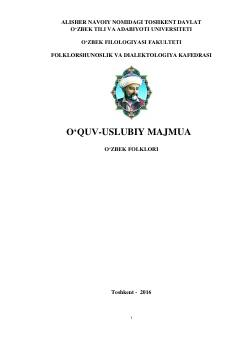

OFO‘zbek xalq og‘zaki ijodi fanining asoslari, janrlari va nazariy masalalariga bag‘ishlangan o‘quv-uslubiy majmua.
Mazkur o‘quv-uslubiy majmua filologiya yo‘nalishidagi talabalar uchun mo‘ljallangan bo‘lib, o‘zbek folklorining janrlari, tarixi, nazariy va amaliy masalalarini o‘z ichiga oladi. Qo‘llanmada xalq og‘zaki ijodining turlari, marosim folklori, dostonlar, ertaklar va boshqa janrlarning badiiy-estetik xususiyatlari atroflicha yoritilgan.